Asahi, Chiba: things to do, food and stays
Asahi · Chiba
Asahi
Highlighted on the Chiba map.

Stay
亀の井ホテル 九十九里

Kame No I Hotel Kujukuri
ホテルルートイン旭-千葉九十九里-
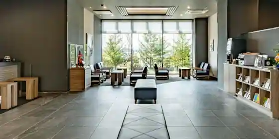
Hotel Route Inn Asahi - Chiba Kujukuri
Hotel at Komyosekijinkuchi Onsen in Asahi with buffet meals and breakfast available.
ＨＯＴＥＬ Ｒ９ Ｔｈｅ Ｙａｒｄ 旭市ロ
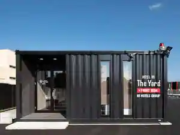
HOTEL R9 The Yard Asahi Shi Ro
ワンディーズルームレンタル サンビレッヂ
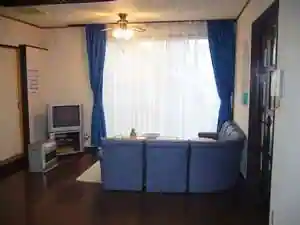
Wandizurumurentaru Sanbirejji
Inn in Asahi; 2-minute walk from Asahi Station.
ホテルサンモール
Hotel Sanmoru
Hotel in Nino, Asahi with parking.
ホテルルートイン旭 －千葉九十九里－（2026年4月29日オープン）
Hotel Route Inn Asahi - Chiba Kujukuri -(2026 Nen 4 Gatsu 29 Nichi Opun)
Hotel at Betsukomyosekijinko Onsen in Asahi with a large communal bath.
九十九里の宿 郷土料理の店 『磯なぎ荘』
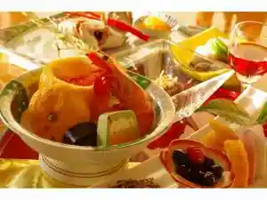
Kujukuri No Yado Kyodoryori No (Iso Nagi So)
Inn in Shinanai, Asahi with local cuisine.
元気な宿 旭
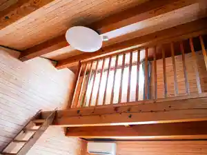
Genki Na Yado Asahi
あさひシーサイドコテージ
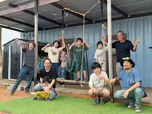
Asahi Shisaido Cottage
飯岡温泉 いいおか潮騒ホテル
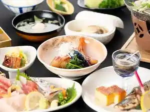
Ioka Onsen Ioka Shiosai Hotel
Hotel at Ioka Onsen in Hagisono, Asahi.
飯岡温泉 グロリア九十九里浜
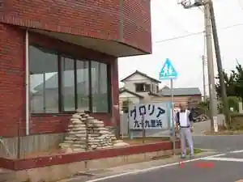
Ioka Onsen Guroria Kujukurihama
Inn at Ioka Onsen in Shimonagai, Asahi with open-air baths.
グロリアケープタワーホテル
Guroriakeputawa Hotel
Hotel in Uenagai, Asahi with scenic views.
Dining
ホーム オブ マザーズ

Homu Obu Mazazu
嘉儀屋
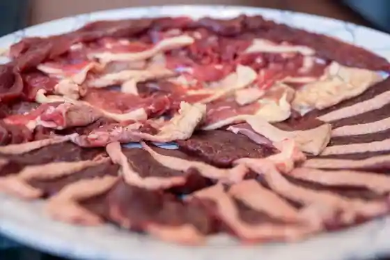
Kagi Ya
焼肉 しいな牧場
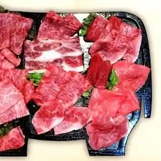
Yakiniku Shina Bokujo
うずめ
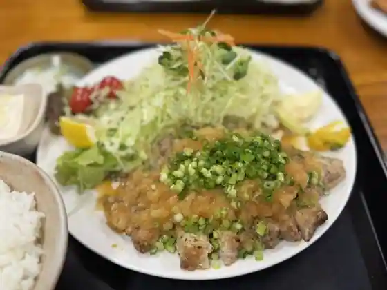
Uzume
又兵衛 旭店
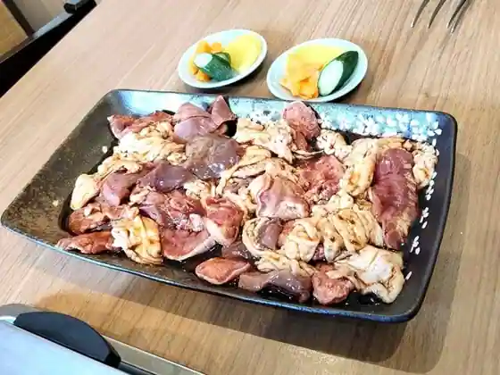
Matabe Asahi
カントリーハウス 海辺里
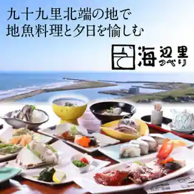
Kantori House Umibe Sato
しらす亭
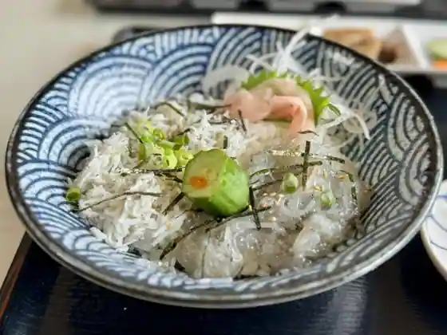
Shirasu Tei
竹岡式ラーメン びーどろ食堂
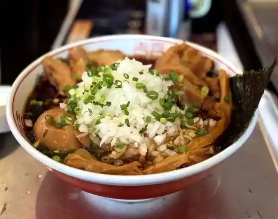
Takeoka Shiki Ramen Bidoro Shokudo
ホーム オブ マザーズ 道の駅 季楽里あさひ店
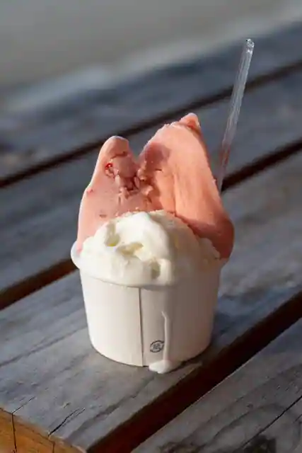
Homu Obu Mazazu Michi No Eki Kirari Asahi
コウゴ牧場直営 焼肉大黒や
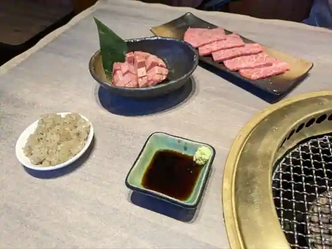
Kougo Bokujo Chokuei Yakiniku Daikoku Ya
レストラン バイキング
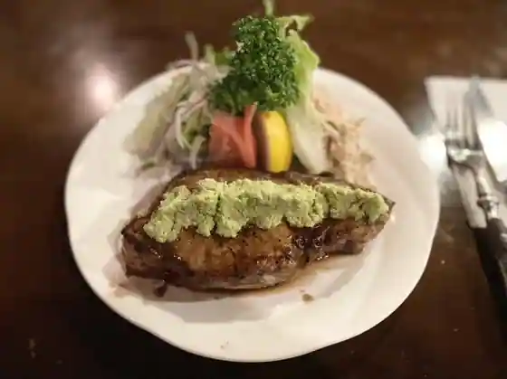
Restaurant Baikingu
創作和菓子 和匠 坂本 干潟駅前
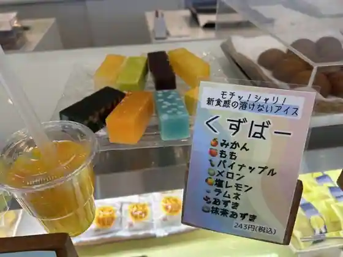
Sosaku Wagashi Washo Sakamoto Higata Ekimae
中村や
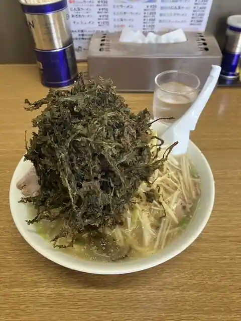
Nakamura Ya
白虎
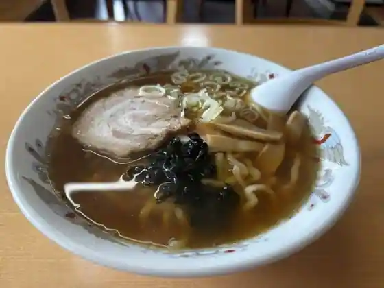
Byakko
東陽らーめん
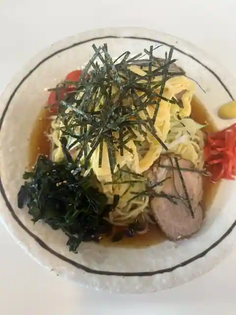
Toyo Ramen
みつわ
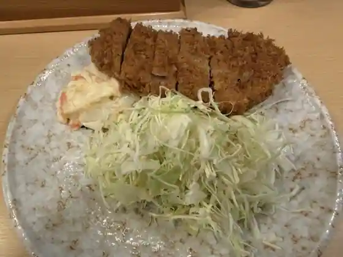
Mitsuwa
旭東洋
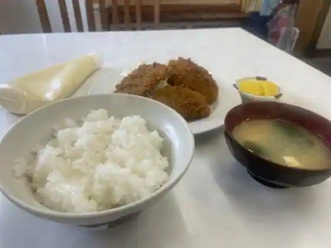
Asahi Toyo
濃厚鶏らーめん 106
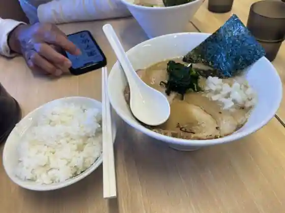
Noko Niwatori Ramen 106
一力
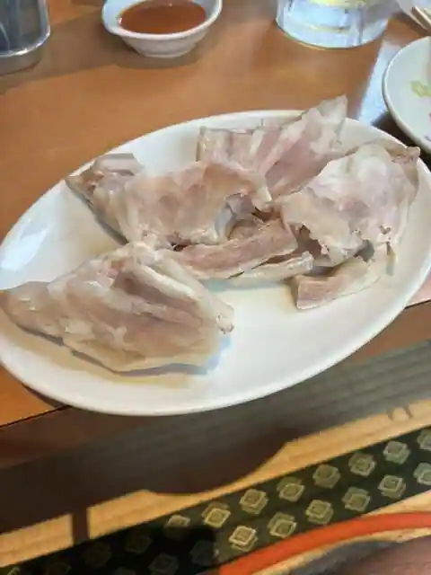
Ichiriki
中国料理 寿苑 海上店
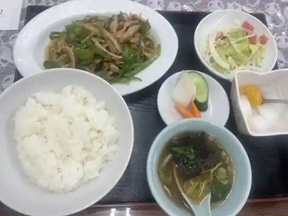
Chugokuryori Hisashi En Kaijo
豚肉料理 およ川
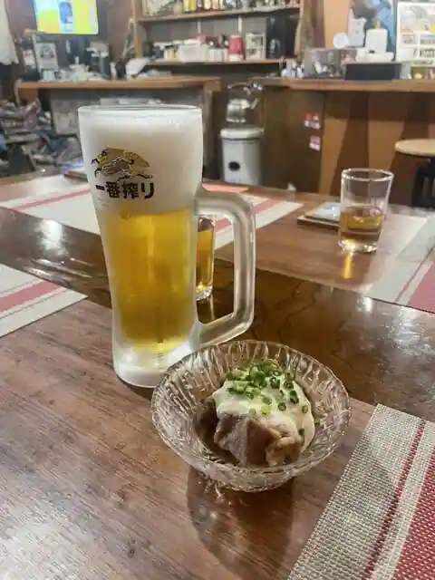
Butaniku Ryori Oyo Kawa
華王飯店
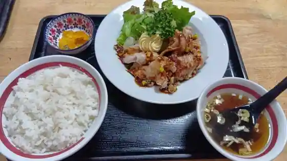
Hana O Meshi
浜ゆう
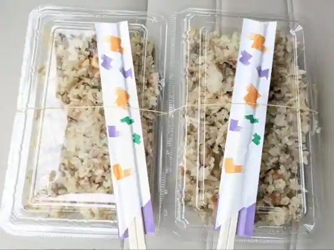
Hama Yu
そば処 冨士見
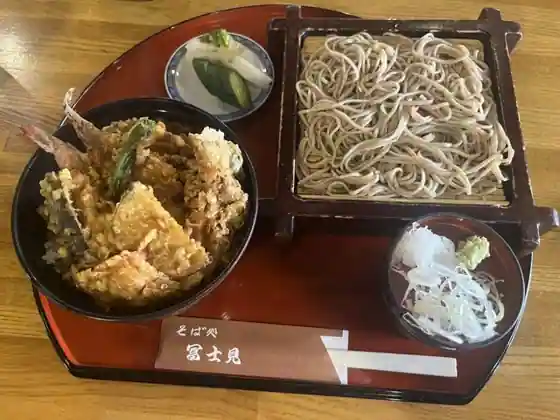
Soba Tokoro Fujimi
Sights
Ue Nagai Park (Iioka Lighthouse, Iioka Gyobu Misaki Tembo Kan)
Roadside Station Kirari Asahi

Ryufuku Tera

Ohara Yugaku Memorial Museum
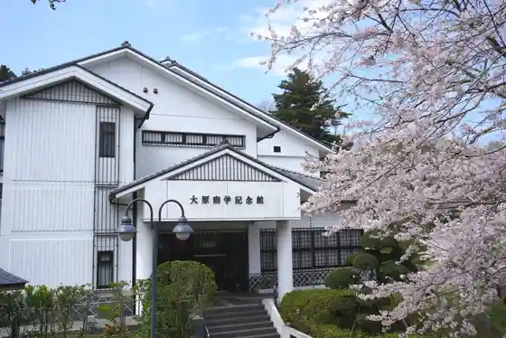
Asahi Bosai Museum
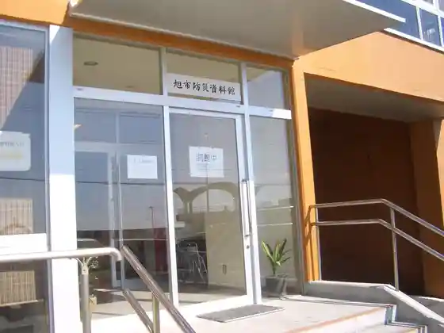
Tamasaki Shrine
Kama Kazu Ise Dai Shrine
Ya Yubigaura Beach
Ohisama Terasu
Tozen Tera
Chuo Jido Yuen
Nosambutsu Chokubai Tokoro Anshin Village